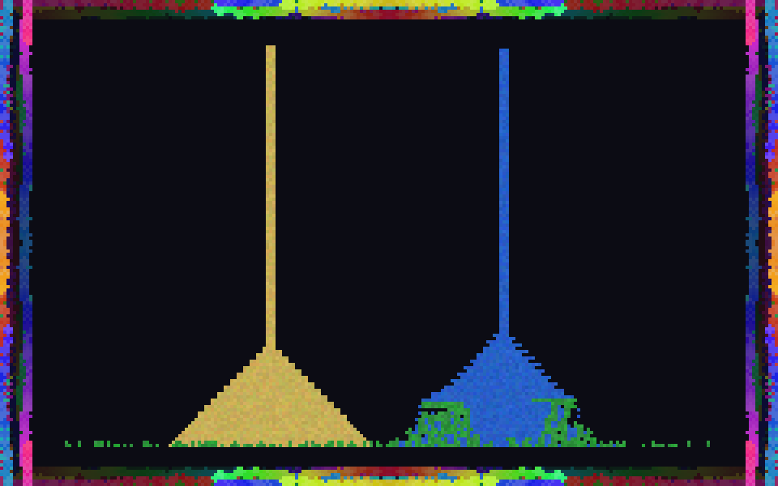
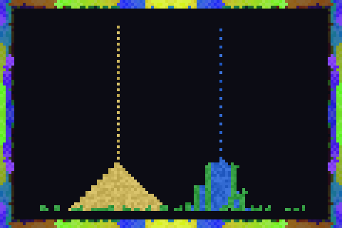
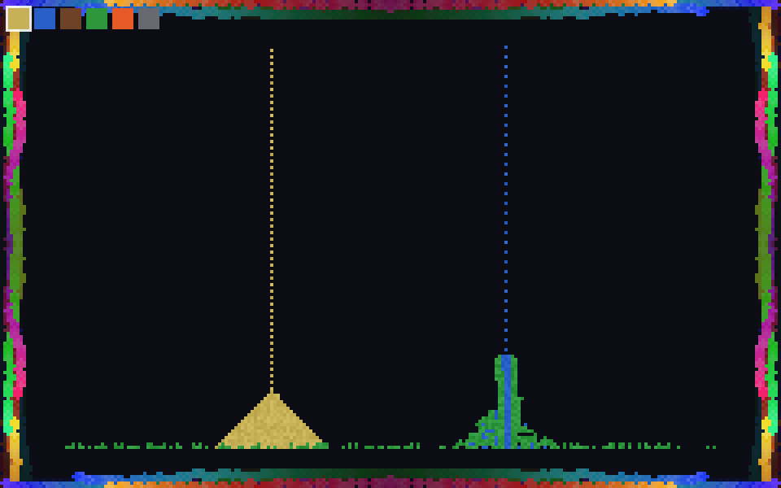
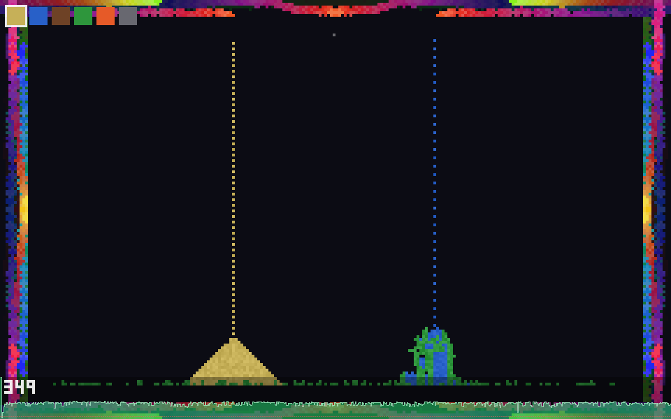
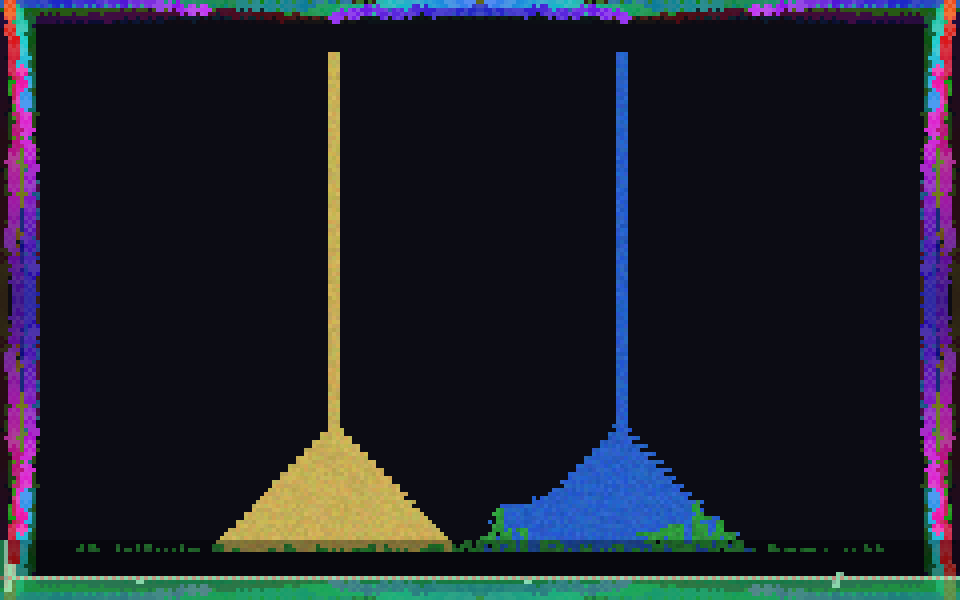

Broiderspiel is a toy: sand pours, water spreads, plants creep along the waterline, fire climbs, smoke rises — all inside a coloured border that stitches itself in four-fold symmetry like cross-stitch on a sampler. It exists in three implementations that share one Model and differ only in how they show it.
This book uses that difference as a reading lens. A simulation that must be drawn every frame is exactly the object early graphics research argued about: where does the world live, who owns the pixels, and what is a "view"? We answer with running code and with the people who asked the question first — at MIT, in Oslo, and at Xerox PARC.
THE THREE PORTS
── webgl index.html — one <canvas>, one <script>, CA on CPU,
colour + upload each frame; double-tap → Web Share.
── tk broiderspiel.tcl — immediate-mode repaint into a
Tk photo; no shader path (that is the point).
── sdl broiderspiel.c — SDL2 + GLSL; a fragment shader
colours the grid on the GPU; immediate-mode UI.
ALL THREE: a debug FPS sparkline compressed across the
bottom 10% of the viewport.
A note on the plates. The archival images referenced in this book (Internet Archive, Library of Congress, and the Met's Watson Library) could not be reproduced here: the machine that typeset the book had its outbound network to those hosts blocked by policy. Rather than fake a scan, every plate is cited as an external reference with its catalogue address — see Plates & Sources, p. 11. All citations were verified; none are invented.
| 01 | The View — where the world is drawn, and Reenskaug's model, view, controller | 3 |
| 02 | The Simulations — Simula, cellular objects, and one frame in eleven steps | 5 |
| 03 | Three Ports, One Toy — immediate vs. retained; CPU photo vs. GPU shader | 7 |
| 04 | Debugging the Ghost — the FPS sparkline as a HyperCard-style live gauge | 8 |
| 05 | A Lineage — Sketchpad 1963 to Broiderspiel, on one timeline | 9 |
| 06 | Four Diagrams — MVC, the HyperCard stack, the Simula object, the pipeline | 10 |
| 07 | Plates & Sources — archival references, verified | 11 |
| 08 | Bibliography — the papers this book leans on | 12 |
Every version of Broiderspiel keeps the same Model: a small grid of cells, each holding a type (sand, water, wood, plant, fire, smoke, stone) and a life counter, plus a persistent ring of border colours the embroidery paints into. Nothing in that Model knows what a screen is. What differs between the three ports is entirely the View — the machinery that turns the grid into light.
That word is not casual. In the winter of 1979, while visiting the Learning Research Group at Xerox PARC, Trygve Reenskaug wrote two technical notes — Thing–Model–View–Editor in May and Models–Views–Controllers in December — that first named the split we now take for granted. The Model is the thing itself; the View is a way of seeing it; the Controller is the way a person reaches in and changes it. After long argument with Adele Goldberg, "Editor" became "Controller," and MVC entered the language of software.
Broiderspiel is an MVC triangle you can hold. The Model is type[] and life[]. The View is three-headed. The Controller is your finger: drag to paint, tap a swatch to choose an element, double-tap to freeze the world and hand it to the operating system's share sheet. Reenskaug's point was that these should be separable — and here they are so separable that the same Model wears three completely different Views without noticing.
The oldest ancestor of the View is older still. In 1963 Ivan Sutherland's Sketchpad let a person draw directly on a CRT with a light pen, the display and the data structure bound together in real time. Sutherland's drawings were the model; ours are a rendering of it. Everything between — Smalltalk's displayView, HyperCard's painted card, the GPU's framebuffer — is a negotiation about how far the picture may drift from the thing.


The three images are the same instant of the same program: two faucets pour sand and water; the water finds the plant strip on the floor and green creeps sideways along it; the four-fold embroidery breathes around the edge. Only the road from grid to glass changes.
Read left to right, the pixel travels further from the CPU each time. In the browser the CPU still touches every colour. In Tk it builds a giant string of hex and hands it to the widget. In SDL the CPU has stopped colouring altogether — it ships integers and lets the shader decide. That migration is the last forty years of graphics, compressed into one toy.
The word "simulation" is not decoration. In 1966 Ole-Johan Dahl and Kristen Nygaard published SIMULA — an ALGOL-based simulation language, built to describe and run discrete-event systems: a harbour, a queue, a factory. To make that possible they needed a way to speak of many independent things that each carry their own state and their own behaviour and act in turn. SIMULA 67 would call that thing a class, and give it objects — and with them, quietly, object-oriented programming was born inside a simulation language.
Broiderspiel's inner box is a discrete-event system in that exact spirit. Each cell is a tiny object with local rules: sand asks "is the cell below me empty or water? then fall." Water asks the same, then "else may I spread sideways?" Fire carries a life counter, ignites the wood and plant it touches, is quenched to smoke by water. Plant creeps into an empty neighbour only when water is adjacent, consuming it — so green traces the waterline and then stops. None of them sees the whole board; the board is only the sum of their turns.
Alan Kay's Smalltalk sharpened this into a slogan: everything is an object, and computation is objects sending each other messages. A Broiderspiel frame is one broadcast of an implicit step message to every cell, resolved bottom-to-top so that gravity settles in a single pass. The broider walkers are objects too — turtles pacing the border, each drawing a stitch that is mirrored into four corners, their hue drifting a little every message.
The trick SIMULA needed was the coroutine: a routine that can pause mid-stride and be resumed, so many processes can interleave without a scheduler fighting them. Our cellular sweep is the humble descendant — cooperative turns over a shared world, resumed each frame. What was invented to simulate a Norwegian harbour now settles a pile of pixel sand.
The same eleven steps run in JavaScript, in Tcl, and in C, line for line. Only step 10 — "hand the grid to the View" — forks: a texture upload, a string blit, a canvas texture.
Step 3 hides a small classic. A falling-sand automaton that scans always left-to-right grows a visible lean, because a grain checks one diagonal before the other. Alternating the scan direction every row and every frame keeps the piles honestly symmetric — a coroutine's fairness, enforced by hand.
Step 11 is a courtesy to the persistent layers. The FPS overlay is blended into the bottom of the buffer for the upload, then the saved band is written back, so the ghost never bakes into the embroidery underneath. The debug view is a guest, not a resident.
| WebGL · JS | Tcl / Tk | SDL · C + OpenGL | |
|---|---|---|---|
| GUI paradigm | immediate (redraw each frame) | retained toolkit, driven immediate-mode | immediate-mode UI, hand-built |
| Where colour happens | CPU → RGBA grid | CPU → hex string → photo | GPU fragment shader |
| Crosses the bus | W·H·4 bytes / frame | a large string / frame | W·H·2 bytes / frame |
| "Share" | Web Share API (PNG) | writes a PNG to disk | writes a snapshot to disk |
| Debug overlay | FPS sparkline — entire history, streaming-downsampled, compressed across the bottom 10% | ||
| Lineage it echoes | HyperCard's card you paint on | Smalltalk's displayView | Sketchpad → the framebuffer |
Immediate versus retained is the quiet argument under all three. A retained toolkit — Tk's canvas, a Smalltalk widget tree — remembers your shapes and redraws them for you; you mutate a scene graph. An immediate-mode UI remembers nothing: every frame you re-declare the whole interface from current state and throw it away. Broiderspiel is immediate everywhere. Even in Tk, where a retained photo widget is available, we treat it as a raw framebuffer and repaint it wholesale — closer in spirit to HyperCard repainting a card than to a modern scene graph.
"However possible to bring the cost down" was the brief, and the SDL port answers it literally. The cellular automaton is inherently serial, so it stays on the CPU — but it touches only a tiny integer grid. Every pixel is decided by the GPU: the fragment shader reads the type/life texture, looks up the palette, hashes a little noise, ramps the fire and smoke gradients, and samples the persistent border. The CPU never writes a colour. Scaling the window costs the GPU, not the simulation — which is the whole trick of shader-accelerated rendering.


Press d. A transparent band lifts from the floor of the viewport and the program's entire life in frames-per-second scrolls across it, the whole recording compressed to the available width — old history averaged down in place so memory never grows. It is a seismograph for jank.
HyperCard taught a generation that a program's state should be visible and touchable, not hidden behind a compiler. The sparkline is that lesson as a gauge: no window, no legend, no dependency — just the machine's pulse painted faintly over its own output, present in all three ports because it belongs to the Model's sense of itself, not to any one View.
The line is not tidy cause and effect; it is a family resemblance. Sutherland binds picture to data. Dahl and Nygaard give the data behaviour and call it simulation.
Kay's group turns behaviour into messages and dreams a notebook that a child could own; Reenskaug splits the seeing from the thing; Ingalls writes down why simplicity is the point.
HyperCard hands all of it to people who never called themselves programmers. Broiderspiel is a postcard back down the line: same ideas, three Views, one small pouring world.
The following archival images are referenced, not reproduced. The typesetting machine's network to these hosts was blocked by policy, so each plate is cited to its holding institution for the reader to view at the source. Every address below was confirmed to exist; none is invented.
Plate A · Sketchpad (1963), MIT film. Ivan Sutherland drawing with a light pen on the TX-2. archive.org/details/sketchpad19633of3
Plate B · HyperCard on the Archive (2017). Apple's HyperCard, emulated in the browser for its 30th anniversary. blog.archive.org/2017/08/11/hypercard-on-the-archive
Plate C · Xerox Alto. The 1973 machine on which Smalltalk and MVC were built. computerhistory.org/revolution/input-output/14/347
Plate D · Dynabook model. Alan Kay's cardboard mock-up (replica), Mobile Computing gallery. computerhistory.org/revolution/mobile-computing/18/315/1683
Plate E · Threads of History. The Thomas J. Watson Library's digitisation of textile sample books from the Antonio Ratti Textile Center — the historical cousin of Broiderspiel's stitched border. metmuseum.org/articles/digitizing-textile-sample-books
Watson Digital Collections (1.3M+ pages). metmuseum.org/art/libraries-and-research-centers/watson-digital-collections
Plate F · Institutional reference. A specific LoC catalogue item could not be verified from this environment; rather than cite an address blindly, it is left as a collection-level pointer to the Library's online catalogue. catalog.loc.gov
Honesty note: this is the one requested source I could not pin to a confirmed item under the network policy in force. It is flagged rather than fabricated.
Figures in this book that are reproduced — the three ports and their debug overlays, the timeline, and the four diagrams — are original: screenshots of the running programs (WebGL via Chromium; Tk and SDL rendered offscreen under Xvfb, the SDL port on Mesa llvmpipe) and hand-drawn SVG.
Citations were verified against publisher and institutional records; quotations are given as published. Broiderspiel — the WebGL, Tcl/Tk, and SDL/OpenGL ports, the debug sparkline, and this book — is released into the playground repository.